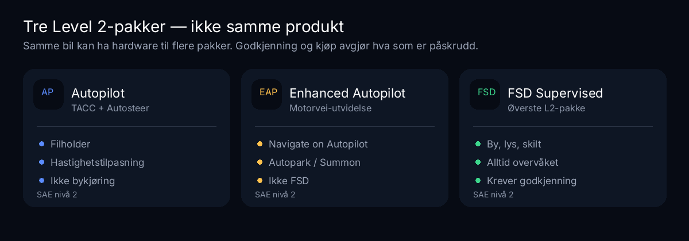
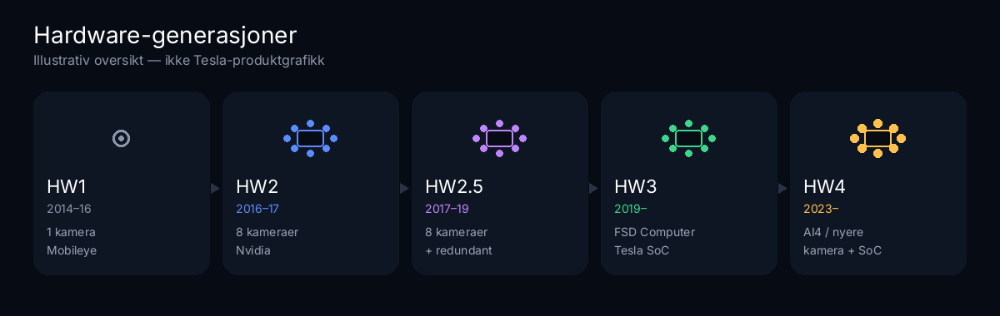

AP
Autopilot
Traffic-Aware Cruise Control + Autosteer. Filholder og hastighetstilpasning.
- Basispakke i mange markeder
- SAE nivå 2
- Ikke bykjøring / FSD
Tesla selger førerstøtte i flere pakker. Autopilot og Full Self-Driving (Supervised) er begge SAE nivå 2: føreren er alltid ansvarlig. De er ikke det samme produktet, og Autopilot er ikke «grunnlaget som ble til FSD» i produktspråket. Denne siden er en faktabasert tidslinje for hardware, pakkenavn og milepæler — med særskilt plass til EU og Norge. Sist oppdatert .
Viktig: Autopilot og FSD Supervised er førerstøtte på SAE nivå 2. Føreren er alltid ansvarlig og må følge med.
Traffic-Aware Cruise Control + Autosteer. Filholder og hastighetstilpasning.
Utvidet motorvei-pakke: Navigate on Autopilot, filskift, Autopark, Summon der tilgjengelig.
Tidligere produktnavn for den øverste pakken (by, lys, skilt).
Dagens øverste Level 2-pakke: rute, by, lys/skilt, parkering under aktiv overvåkning.
Samme kameraer og datamaskin kan kjøre flere pakker. Pakken du har betalt for — og hva myndighetene tillater i landet ditt — avgjør hva som er påskrudd. Hardware alene er ikke det samme som FSD-godkjenning.

Oppgraderingsrettigheter HW2/HW2.5→HW3 har endret seg over tid. Sjekk egen ordre hos Tesla — ikke anta gratis oppgradering.

| Gen | Ca. produksjon | Kort | Merknad |
|---|---|---|---|
| HW1 | ~sep 2014 – okt 2016 | Mobileye EyeQ3, 1 kamera + radar | Første Autopilot-hardware. Kan ikke kjøre moderne FSD. |
| HW2 | okt 2016 – ~2017 | 8 kameraer, Nvidia Drive PX 2 | «Autopilot 2.0» / Tesla Vision. |
| HW2.5 | ~2017 – 2019 | Forbedret compute, 8 kameraer | Ofte oppgraderbar til HW3-datamaskin (vilkår har variert). |
| HW3 | fra ~apr 2019 | Tesla FSD Computer | Bærebjelke for FSD Beta / Supervised. Vision-only på mange biler senere. |
| HW4 / AI4 | fra jan 2023 | Nyere kameraer + kraftigere SoC | FSD på HW4 kom gradvis. Native HW4-oppløsning rapportert fra v13-familien. |
Hardware ≠ godkjenning. HW3 eller HW4 i bilen betyr ikke at FSD Supervised er lovlig å aktivere der du bor.
USA ≠ EU. RDW understreker at FSD Supervised i USA ikke er den samme software-versjonen som i EU. Sammenlign ikke milepæler én-til-én.
Svensk nei / Speed Offset og tilsvarende nasjonale særtrekk hører hjemme i denne EU/Norge-blokken — ikke i US-tidslinjen. Se også Norge-huben og TCMV.
Tilbake til godkjenningsstatus for Norge · TCMV-estimat · Europa-feed.